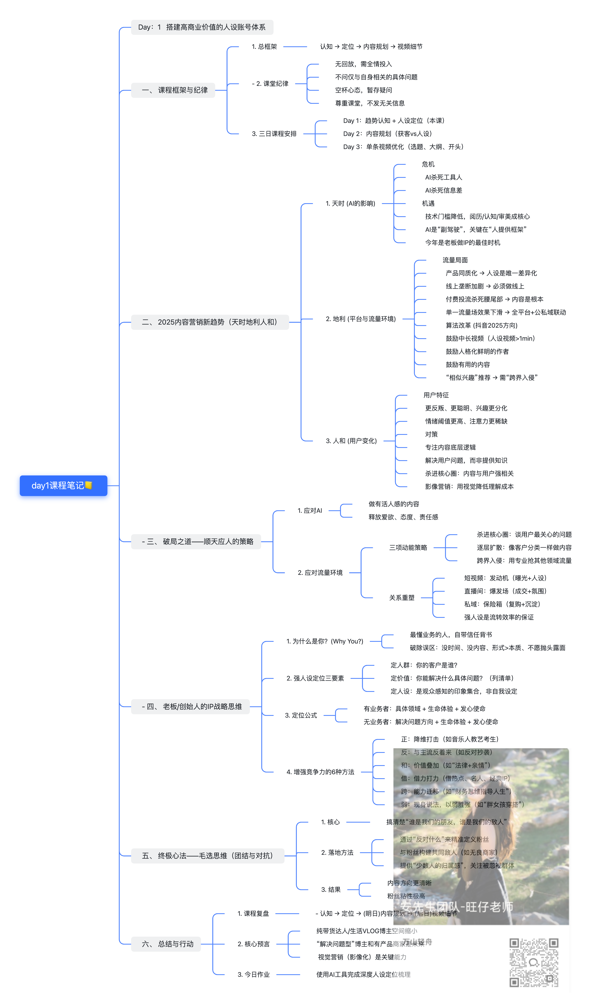

本周过关标准
不是“课程看完了”，而是下面六项都留下可检查的产出。
不要重做定位
当前 v0.2 是本周实验假设。先发布，不能因为一条内容的结果推翻它。
不要堆新技巧
基线作品按现有能力完成。否则之后无法判断进步究竟来自哪里。
不要囤课
课程学习最多占本周 20%。时间不足时减少阅读，不取消发布和复盘。
第一周执行日程
默认采用两天版；如果只有一天，切换到压缩版。两种版本都保留“发布”和“T+3复盘”。
学习日｜约 3.5 小时
不看课程，先回答：我的观众是谁、他卡在哪里、我能提供什么。
只抓定位的经营决策，不抄长篇笔记。
重点学习人群、价值、人设与 AI 的责任边界。
把现有 v0.2 定位改写成四个可执行问题。
只拆“为谁解决什么问题”，不做全维度分析。
推荐使用现有选题 01，并列出可追溯来源。
制作日｜约 7—8 小时
区分来源说法、个人分析和可借鉴方法。
按现有能力完成，不刻意使用后续课程技巧。
记录实际耗时和最卡的环节。
在看到真实数据前写下预测，发布后不回改。
T+3｜45 分钟
登记后台可见数据、观众评论、主要问题和下一条只改变的变量。
阅读本页两节核心内容，原始资料课后补。
完成四个核心问题和一句话定位。
只记录目标人群、具体问题与价值承诺。
核对现有来源，确定可以说和不能说的内容。
先一句话结论，再写必要支撑点。
采用自己当前最熟悉的形式。
记录预测、发布时间与平台。
学习当天不硬塞复盘；数据到期后单独完成。
课程一：定位不是标签，而是一组经营决策
来源：《01-定位和策划思维》。本周不需要重新发明赛道，只要理解定位由哪些判断共同组成。
1. 先问流量最终用来做什么
课程用“摆地摊”和“买手店”区分两种经营方式：前者更关注单条转化和低成本复制，后者更关注个人 IP、信任和长期复利。它们是决策比喻，不是非黑即白的账号分类。
2. 垂直的核心是人群和价值连续一致
“一直讲 AI”不一定构成有效垂直。更重要的是：内容是否持续服务相近的人群，是否反复解决相近层级的问题。你的暂定垂直不是泛 AI，而是帮助特定受众看懂 AI 如何连接需求、产品、获客和交付。
3. 人群与价值是一体两面
人群不是人口标签
除了年龄、职业，还要理解其认知状态、现实处境、近期问题、观看习惯和行动障碍。
价值不是抽象“干货”
价值必须落到一个具体变化：看懂、避免误判、作出选择、完成步骤或建立信任。
4. 内容类型和影像系统从真实能力出发
擅长表达可以先做讲述型，擅长拍摄可以先做呈现型。稳定的镜头、场景、节奏、审美和叙事腔调，需要多次作品后逐渐形成，第一周无需强行设计完整视觉风格。
5. 人设不是虚构标签
人设来自真实经历、能力、局限、价值观、做事方式和观众关系。你的可用真实信息包括：公司 Instagram 短视频运营经验、约 31 条内容的执行经验、匿名爆款案例、对内容获客结果的关注，以及曾被复杂 AI 成稿卡住的真实问题。
定位的七个发散入口
展开查看七个入口
- 常规价值与明确目标。
- 在流程、行业、人群或理念上做细分。
- 给旧场景叠加新的价值。
- 把其他职业或领域的能力迁移进来。
- 寻找未被满足的人群和需求。
- 通过栏目化或任务化建立稳定内容容器。
- 从一个具体目标用户出发，围绕其多种真实问题提供综合价值。
这些入口用于发散，不代表本周要同时尝试七种定位。
课程二：趋势认知、人群价值与观众印象
来源：全域获客课 Day1。本页提炼第一周需要的部分，并保留课程观点的归属。
1. AI 降低工具门槛，但不替人负责
AI 可以协助
搜索线索、整理材料、发散方向、比较版本、检查遗漏和降低部分制作门槛。
人必须负责
目标、选题框架、事实来源、真实经历、判断、审美、最终取舍和发布责任。
课程把 AI 比作“副驾驶”，这是方便理解的比喻。对你的账号尤其重要：中文二次整理只能提供选题线索，案例仍需找到本人视频、采访、品牌官网或公开账号。
2. 强人设定位的三个问题
你的观众是谁？
不要回答“所有想赚钱的人”，要写出认知状态和当下处境。
你解决什么问题？
用问题清单表达，不用“提供干货、赋能成长”这种抽象词。
观众会怎样记住你？
人设是持续内容形成的综合印象，不是一次自我介绍或自封标签。
3. 从宽泛知识进入用户的“近问题”
Day1 课程强调，不要只讲自己的知识体系，而要让专业能力解决观众眼前的问题。对本账号来说，“AI 怎样赚钱”太宽；“普通人说用 AI 赚钱，真正卖给用户的是什么”更接近一个可以被回答的问题。
4. 六种竞争方向只用于发散
本周不要求使用这些策略。它们只能基于真实能力与材料发散，不能制造经历、效果或冲突。
5. 人设来自持续可见的做事方式
你可以逐步让观众看到：你会追原始来源、会把复杂案例拆成步骤、会区分营收和利润、会说明案例的成立条件，也愿意公开哪些环节尚未核验。这些比“我是一个严谨的人”更可信。
查看 Day1 原始课程笔记图
图片内容属于课程笔记；其中关于平台趋势、算法和年份的判断未在本任务中独立核验。

定位练习：把 v0.2 拆成四个可执行问题
下面已放入定位文件中的真实信息作为起点。你的任务不是写得更宏大，而是删掉模糊词，让下一条内容可以执行。
我通过查找原始来源、拆解海外 AI 生意案例，并用大白话整理成普通人可以理解的步骤，帮助会简单使用 AI、但不知道如何变现的人，看懂案例呈现的商业逻辑，不只被夸张数字吸引。
基线作品：先测真实起点
推荐从现有选题池选择材料基本够用、又最贴近当前定位的一题。
推荐原因：目标观众明确，现有素材基本够用，不需要依赖尚未核验的海外营收数字。
制作完成检查
爆款单项拆解：只看“为谁解决什么”
选择与你目标人群、内容形态相近的真实爆款。安先生属于知识学习对象，不拿来模仿标题、开头、结构或表达风格。
第一周掌握测验
建议定位练习完成后再答。达到 7/8 即可，不需要背课程原话。
发布前预测与 T+3 复盘
先预测、后看数据。预测不是为了猜中播放量，而是让你明确本条内容到底在验证什么。
发布前：看到真实数据之前填写
T+3：真实数据
本学习包使用的资料
- 15-编导与个人IP十二周学习方案.md
- 01-定位和策划思维.md
- 12-内容时代的全域获客课-2026-02-26至03-01.md
- 022-第一节课.md
- 定位总览_v0.1.md（正文版本 v0.2）
- 04_选题库/选题池.md
课程中的成绩、平台判断、算法说法和趋势结论均属于授课者或课程材料，不代表本页已独立核验。学习时提取方法，发布内容时仍需遵守当前 Vault 的事实核验规则。